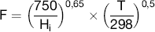
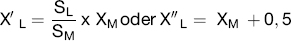
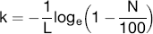
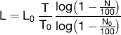
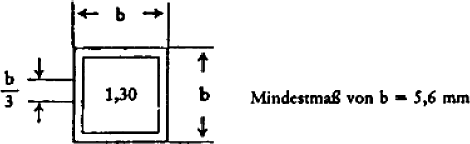

| 1 | Anwendungsbereich |
| Diese Anlage gilt, soweit in den Anhängen I bis X nichts anderes bestimmt ist, für land- oder forstwirtschaftliche Zugmaschinen mit Dieselmotor (Kompressionszündungsmotor). Im Sinne dieser Anlage sind land- oder forstwirtschaftliche Zugmaschinen alle Kraftfahrzeuge auf Rädern oder Raupenketten mit wenigstens zwei Achsen, deren Funktion im Wesentlichen in der Zugleistung besteht und die besonders zum Ziehen, Schieben, Tragen oder zur Betätigung bestimmter Geräte, Maschinen oder Anhänger eingerichtet sind, die zur Verwendung in land- oder forstwirtschaftlichen Betrieben bestimmt sind. | |
| (2) | (weggefallen) |
| 3 | Anwendung der Vorschriften auf land- oder forstwirtschaftliche luftbereifte Zugmaschinen mit zwei Achsen und einer bauartbedingten Höchstgeschwindigkeit zwischen 6 km/h und 25 km/h im Rahmen der Richtlinien der Europäischen Gemeinschaften |
| 3.1 | Bei Anträgen auf Genehmigung auf Grund von Richtlinien der Europäischen Gemeinschaften hat das Kraftfahrt-Bundesamt das Formblatt nach Anhang X auszufüllen und je eine Abschrift dem Hersteller oder seinem Beauftragten und den zuständigen Verwaltungen der anderen Mitgliedstaaten der Europäischen Gemeinschaften zu übersenden. |
| 3.2 | Wird die Übereinstimmung eines Fahrzeugtyps mit den Anforderungen dieser Anlage durch die Vorlage eines Formblatts nach Anhang X, das von einem Mitgliedstaat der Europäischen Gemeinschaften ausgefertigt wurde, nachgewiesen, so wird der Fahrzeugtyp gemäß § 21a Absatz 1a als bedingungsgemäß anerkannt. |
| 1 | (weggefallen) | ||||||||||||||
| 2 | Begriffsbestimmungen | ||||||||||||||
| 2.1 | (weggefallen) | ||||||||||||||
| 2.2 | "Zugmaschinentyp hinsichtlich der Begrenzung der Emission verunreinigender Stoffe aus dem Motor" bezeichnet Zugmaschinen, die untereinander keine wesentlichen Unterschiede aufweisen; solche Unterschiede können insbesondere die Merkmale der Zugmaschine und des Motors nach Anhang II sein. | ||||||||||||||
| 2.3 | "Dieselmotor" bezeichnet einen Motor, der nach dem Prinzip der Kompressionszündung arbeitet. | ||||||||||||||
| 2.4 | "Kaltstarteinrichtung" bezeichnet eine Einrichtung, die nach ihrer Einschaltung die dem Motor zugeführte Kraftstoffmenge vorübergehend vergrößert und die dazu dient, das Anlassen des Motors zu erleichtern. | ||||||||||||||
| 2.5 | "Trübungsmessgerät" bezeichnet ein Gerät, das dazu dient, die Absorptionskoeffizienten der von den Zugmaschinen emittierten Auspuffgase stetig zu messen. | ||||||||||||||
| 3 | Antrag auf Erteilung der EWG-Betriebserlaubnis | ||||||||||||||
| 3.1 | Der Antrag auf Erteilung einer Betriebserlaubnis ist vom Zugmaschinenhersteller oder seinem Beauftragten einzureichen. | ||||||||||||||
| 3.2 | Dem Antrag sind folgende Unterlagen in dreifacher Ausfertigung beizufügen. | ||||||||||||||
| 3.2.1 | Beschreibung der Motorbauart, die alle Angaben nach Anhang II enthält. | ||||||||||||||
| 3.2.2 | Zeichnungen des Brennraums und des Kolbenbodens. | ||||||||||||||
| 3.3 | Ein Motor und seine Ausrüstungsteile nach Anhang II für den Einbau in die zu genehmigende Zugmaschine sind der für die Durchführung der Prüfungen nach Punkt 5 zuständigen Behörde zur Verfügung zu stellen. Auf Antrag des Herstellers kann die Prüfung jedoch, wenn die für die Durchführung der Prüfungen zuständige Behörde dies zulässt, an einer Zugmaschine durchgeführt werden, die für den zu genehmigenden Zugmaschinentyp repräsentativ ist. | ||||||||||||||
| 3.A | EWG-Betriebserlaubnis | ||||||||||||||
| Dem Formblatt für die Erteilung der EWG-Betriebserlaubnis ist ein Formblatt nach dem Muster des Anhangs X beizufügen. | |||||||||||||||
| 4 | Kennzeichen für den korrigierten Wert des Absorptionskoeffizienten | ||||||||||||||
| 4.1 | (weggefallen) | ||||||||||||||
| 4.2 | (weggefallen) | ||||||||||||||
| 4.3 | (weggefallen) | ||||||||||||||
| 4.4 | An jeder Zugmaschine, die einem nach dieser Richtlinie genehmigten Typ entspricht, ist sichtbar und an gut zugänglicher Stelle, die im Anhang zum EWG-Betriebserlaubnisbogen nach Anhang X anzugeben ist, ein rechteckiges Kennzeichen mit dem korrigierten Wert des Absorptionskoeffizienten anzubringen, der bei der Erteilung der Betriebserlaubnis während der Prüfung bei freier Beschleunigung erhalten wurde, angegeben in m-1, und der bei der Genehmigung nach dem in Nummer 3.2 des Anhangs IV beschriebenen Verfahren festgestellt wurde. | ||||||||||||||
| 4.5 | Das Kennzeichen muss deutlich lesbar und unverwischbar sein. | ||||||||||||||
| 4.6 | Anhang IX enthält ein Muster dieses Kennzeichens. | ||||||||||||||
| 5 | Vorschriften und Prüfungen | ||||||||||||||
| 5.1 | A l l g e m e i n e s | ||||||||||||||
| Die Teile, die einen Einfluss auf die Emission verunreinigender Stoffe haben können, müssen so entworfen, gebaut und angebracht sein, dass die Zugmaschine unter normalen Betriebsbedingungen trotz der Schwingungen, denen sie ausgesetzt ist, den technischen Vorschriften dieser Richtlinie entspricht. | |||||||||||||||
| 5.2 | V o r s c h r i f t e n ü b e r d i e K a l t s t a r t e i n r i c h t u n g e n | ||||||||||||||
| 5.2.1 | Die Kaltstarteinrichtung muss so beschaffen sein, dass sie weder eingeschaltet werden noch in Betrieb bleiben kann, wenn der Motor unter normalen Betriebsbedingungen läuft. | ||||||||||||||
| 5.2.2 | Nummer 5.2.1 gilt nicht, wenn mindestens eine der folgenden Bedingungen erfüllt wird: | ||||||||||||||
| 5.2.2.1 | Wenn bei eingeschalteter Kaltstarteinrichtung der Absorptionskoeffizient durch die Motorabgase bei gleichbleibenden Drehzahlen – gemessen nach dem Verfahren des Anhangs III – die in Anhang VI angegebenen Grenzwerte nicht überschreitet. | ||||||||||||||
| 5.2.2.2 | Wenn die dauernde Einschaltung der Kaltstarteinrichtung innerhalb einer angemessenen Frist den Stillstand des Motors zur Folge hat. | ||||||||||||||
| 5.3 | V o r s c h r i f t e n ü b e r d i e E m i s s i o n v e r u n r e i n i g e n d e r S t o f f e | ||||||||||||||
| 5.3.1 | Die Messung der Emission verunreinigender Stoffe aus einer Zugmaschine des Typs, der zur Erteilung der EWG-Betriebserlaubnis vorgeführt wurde, ist nach den beiden Verfahren der Anhänge III und IV durchzuführen, wobei der eine Anhang die Prüfungen bei gleichbleibenden Drehzahlen und der andere die Prüfungen bei freier Beschleunigung betrifft2). | ||||||||||||||
| 5.3.2 | Der nach dem Verfahren des Anhangs III gemessene Wert der Emission verunreinigender Stoffe darf die in Anhang VI angegebenen Grenzwerte nicht überschreiten. | ||||||||||||||
| 5.3.3 | Für Motoren mit Abgasturboladern darf der bei freier Beschleunigung gemessene Wert des Absorptionskoeffizienten höchstens gleich dem Größtwert sein, der nach Anhang VI für den Nennwert des Luftdurchsatzes vorgesehen ist, der dem höchsten bei den Prüfungen bei gleichbleibenden Drehzahlen gemessenen Absorptionskoeffizienten, erhöht um 0,5 m-1, entspricht. | ||||||||||||||
| 5.4 | Gleichwertige Messgeräte sind zulässig. Wird ein anderes Gerät als ein Gerät nach Anhang VII benützt, so ist seine Gleichwertigkeit für den betreffenden Motor nachzuweisen. | ||||||||||||||
| 6 | (weggefallen) | ||||||||||||||
| 7 | Übereinstimmung der Produktion | ||||||||||||||
| 7.1 | Jede Zugmaschine der Serie muss dem genehmigten Zugmaschinentyp hinsichtlich der Bauteile entsprechen, die einen Einfluss auf die Emission verunreinigender Stoffe aus dem Motor haben können. | ||||||||||||||
| 7.2 | (weggefallen) | ||||||||||||||
| 7.3 | Im Allgemeinen ist die Übereinstimmung der Produktion hinsichtlich der Begrenzung der Emission verunreinigender Stoffe aus dem Dieselmotor auf Grund der Beschreibung im Anhang zum EWG-Betriebserlaubnisbogen nach Anhang X zu überprüfen. | ||||||||||||||
| 7.3.1 | Bei der Nachprüfung einer aus der Serie entnommenen Zugmaschine ist wie folgt zu verfahren: | ||||||||||||||
| 7.3.1.1 | Eine noch nicht eingefahrene Zugmaschine ist der Prüfung in freier Beschleunigung nach Anhang IV zu unterziehen. Die Zugmaschine gilt als mit dem genehmigten Typ übereinstimmend, wenn der festgestellte Wert des Absorptionskoeffizienten den im Kennzeichen angegebenen Wert um nicht mehr als 0,5 m-1 überschreitet. | ||||||||||||||
| 7.3.1.2 | Wenn der bei der Prüfung nach Nummer 7.3.1.1 festgestellte Wert den im Kennzeichen angegebenen Wert um mehr als 0,5 m-1 überschreitet, ist eine Zugmaschine des betreffenden Typs oder deren Motor einer Prüfung bei verschiedenen gleichbleibenden Drehzahlen nach Anhang III zu unterziehen. Der Emissionswert darf die Grenzwerte nach Anhang VI nicht überschreiten. | ||||||||||||||
|
| |||||||||||||||
Anhang II | |||||||||||||||
Hauptmerkmale der Zugmaschine und des Motors und Angaben über die Durchführung der Prüfungen1) | |||||||||||||||
| 1 | Beschreibung des Motors | ||||||||||||||
| 1.1 | Marke: . . . . . . . . . . . . . . . . . . . . | ||||||||||||||
| 1.2 | Typ: . . . . . . . . . . . . . . . . . . . . | ||||||||||||||
| 1.3 | Arbeitsweise: Viertakt/Zweitakt2) | ||||||||||||||
| 1.4 | Bohrung: . . . . . . . . . . . . . . . . . . . . mm | ||||||||||||||
| 1.5 | Hub: . . . . . . . . . . . . . . . . . . . . mm | ||||||||||||||
| 1.6 | Zahl der Zylinder: . . . . . . . . . . . . . . . . . . . . | ||||||||||||||
| 1.7 | Hubraum: . . . . . . . . . . . . . . . . . . . . cm3 | ||||||||||||||
| 1.8 | Kompressionsverhältnis3): . . . . . . . . . . . . . . . . . . . . | ||||||||||||||
| 1.9 | Art der Kühlung: . . . . . . . . . . . . . . . . . . . . | ||||||||||||||
| 1.10 | Aufladung mit/ohne2) Beschreibung des Systems: . . . . . . . . . . . . . . . . . . . . | ||||||||||||||
| 1.11 | Luftfilter: Zeichnungen oder Marken und Typen: . . . . . . . . . . . . . . . . . . . . | ||||||||||||||
| 2 | Zusätzliche Einrichtungen zur Verminderung der Abgastrübung (falls vorhanden und nicht unter einem anderen Punkt erfasst) | ||||||||||||||
| Beschreibung und Skizzen: . . . . . . . . . . . . . . . . . . . . | |||||||||||||||
| 3 | Kraftstoff-Speisesystem | ||||||||||||||
| 3.1 | Beschreibung und Skizzen der Ansaugleitungen nebst Zubehör (Vorwärmer, Ansaugschalldämpfer usw.): . . . . . . . . . . . . . . . . . . . . | ||||||||||||||
| 3.2 | Kraftstoffzufuhr: . . . . . . . . . . . . . . . . . . . . | ||||||||||||||
| 3.2.1 | Kraftstoffpumpe: . . . . . . . . . . . . . . . . . . . . | ||||||||||||||
| Druck3) . . . . . . . . . oder charakteristisches Diagramm3) . . . . . . . . . | |||||||||||||||
| 3.2.2 | Einspritzvorrichtung: . . . . . . . . . . . . . . . . . . . . | ||||||||||||||
| 3.2.2.1 | Pumpe | ||||||||||||||
| 3.2.2.1.1 | Marke(n): . . . . . . . . . . . . . . . . . . . . | ||||||||||||||
| 3.2.2.1.2 | Typ(en): . . . . . . . . . . . . . . . . . . . . | ||||||||||||||
| 3.2.2.1.3 | Einspritzmenge: . . . . . . . . . . . . . mm3 je Hub bei . . . . . . . . . . . . U/min | ||||||||||||||
| der Pumpe1) bei Vollförderung oder charakteristisches Diagramm2)1): | |||||||||||||||
| . . . . . . . . . . . . . . . . . . . . . . . . . . . . . . . . . . . . . . . . . . . . . . . . . . . . . . . . . . . . . . | |||||||||||||||
| Angabe des verwendeten Verfahrens: am Motor/auf dem Pumpenprüfstand2) | |||||||||||||||
| 3.2.2.1.4 | Einspritzzeitpunkt: . . . . . . . . . . . . . . . . . . . . | ||||||||||||||
| 3.2.2.1.4.1 | Verstellkurve des Spritzverstellers: . . . . . . . . . . . . . . . . . . . . | ||||||||||||||
| 3.2.2.1.4.2 | Einstellung des Einspritzzeitpunkts: . . . . . . . . . . . . . . . . . . . . | ||||||||||||||
| 3.2.2.2 | Einspritzleitungen | ||||||||||||||
| 3.2.2.2.1 | Länge: . . . . . . . . . . . . . . . . . . . . | ||||||||||||||
| 3.2.2.2.2 | Lichter Durchmesser: . . . . . . . . . . . . . . . . . . . . | ||||||||||||||
| 3.2.2.3 | Einspritzdüse(n): . . . . . . . . . . . . . . . . . . . . | ||||||||||||||
| 3.2.2.3.1 | Marke(n): . . . . . . . . . . . . . . . . . . . . | ||||||||||||||
| 3.2.2.3.2 | Typ(en): . . . . . . . . . . . . . . . . . . . . | ||||||||||||||
| 3.2.2.3.3 | Einspritzdruck: . . . . . . . . . . . . . . . . . . . . bar1) | ||||||||||||||
| oder Einspritzdiagramm2)1): . . . . . . . . . . . . . . . . . . . . | |||||||||||||||
| 3.2.2.4 | Regler | ||||||||||||||
| 3.2.2.4.1 | Marke(n): . . . . . . . . . . . . . . . . . . . . | ||||||||||||||
| 3.2.2.4.2 | Typ(en): . . . . . . . . . . . . . . . . . . . . | ||||||||||||||
| 3.2.2.4.3 | Drehzahl bei Beginn der Abregelung bei Last: . . . . . . . . . . . . . . . . . . . . U/min | ||||||||||||||
| 3.2.2.4.4 | Größte Drehzahl ohne Last: . . . . . . . . . . . . . . . . . . . . U/min | ||||||||||||||
| 3.2.2.4.5 | Leerlaufdrehzahl: . . . . . . . . . . . . . . . . . . . . U/min | ||||||||||||||
| 3.3 | Kaltstarteinrichtung | ||||||||||||||
| 3.3.1 | Marke(n): . . . . . . . . . . . . . . . . . . . . | ||||||||||||||
| 3.3.2 | Typ(en): . . . . . . . . . . . . . . . . . . . . | ||||||||||||||
| 3.3.3 | Beschreibung: . . . . . . . . . . . . . . . . . . . . | ||||||||||||||
| 4 | Ventile | ||||||||||||||
| 4.1 | Maximale Ventilhübe und Öffnungs- sowie Schließwinkel, bezogen auf die Totpunkte: | ||||||||||||||
| . . . . . . . . . . . . . . . . . . . . . . . . . . . . . . . . . . . . . . . . . . . . . . . . . . . . . . . . . . | |||||||||||||||
| 4.2 | Prüf- und/oder Einstellspiel2): . . . . . . . . . . . . . . . . . . . . | ||||||||||||||
| 5 | Auspuffanlage | ||||||||||||||
| 5.1 | Beschreibung und Skizzen: . . . . . . . . . . . . . . . . . . . . | ||||||||||||||
| 5.2 | Mittlerer Gegendruck bei größter Leistung: . . . . . . . . . . . . . . . . . . . . | ||||||||||||||
| . . . . . . . . . . . . . . . . . . . . mm WS/Pascal (Pa) | |||||||||||||||
| 6 | Kraftübertragung | ||||||||||||||
| 6.1 | Trägheitsmoment des Motorschwungrades: . . . . . . . . . . . . . . . . . . . . | ||||||||||||||
| . . . . . . . . . . . . . . . . . . . . . . . . . . . . . . . . . . . . . . . . | |||||||||||||||
| 6.2 | Zusätzliches Trägheitsmoment, wenn das Getriebe sich in Leerlaufstellung befindet: | ||||||||||||||
| . . . . . . . . . . . . . . . . . . . . . . . . . . . . . . . . . . . . . . . . . . . . . . . . . . . . . . . . . . | |||||||||||||||
| 7 | Zusätzliche Angaben über die Prüfbedingungen | ||||||||||||||
| 7.1 | Verwendetes Schmiermittel | ||||||||||||||
| 7.1.1 | Marke(n): . . . . . . . . . . . . . . . . . . . . | ||||||||||||||
| 7.1.2 | Typ(en): . . . . . . . . . . . . . . . . . . . . | ||||||||||||||
| (Wenn dem Kraftstoff ein Schmiermittel zugesetzt ist, muss der Prozentanteil des Öls angegeben werden) | |||||||||||||||
| 8 | Kenndaten des Motors | ||||||||||||||
| 8.1 | Drehzahl im Leerlauf: . . . . . . . . . . . . . . . . . . . . U/min3) | ||||||||||||||
| 8.2 | Drehzahl bei Höchstleistung: . . . . . . . . . . . . . . . . . . . . U/min3) | ||||||||||||||
| 8.3 | Leistung an den sechs Messpunkten nach Punkt 2.1 des Anhangs III | ||||||||||||||
| 8.3.1 | Leistung des Motors auf dem Prüfstand: | ||||||||||||||
| (nach BSI-CUNA-DIN-GOST-IGM-ISO-SAE- usw. Norm) | |||||||||||||||
| 8.3.2 | Leistung an den Rädern der Zugmaschine | ||||||||||||||
| |||||||||||||||
|
| |||||||||||||||
Anhang III | |||||||||||||||
Prüfung bei gleichbleibenden Drehzahlen | |||||||||||||||
| 1 | Einleitung | ||||||||||||||
| 1.1 | Dieser Anhang beschreibt das Verfahren für die Durchführung der Prüfung des Motors bei verschiedenen gleichbleibenden Drehzahlen bei 80 Prozent der Volllast. | ||||||||||||||
| 1.2 | Die Prüfung kann entweder an einer Zugmaschine oder an einem Motor vorgenommen werden. | ||||||||||||||
| 2 | Messverfahren | ||||||||||||||
| 2.1 | Die Trübung der Abgase ist bei gleichbleibender Drehzahl bei 80 Prozent der Volllast des Motors zu messen. Es sind sechs Messungen vorzunehmen, die gleichmäßig zwischen der Höchstleistungsdrehzahl des Motors und der größeren der folgenden Motordrehzahlen aufzuteilen sind: – 55 Prozent der Höchstleistungsdrehzahl, – 1 000 U/min. | ||||||||||||||
| Die äußeren Messpunkte müssen an den Enden des vorstehend angegebenen Messbereichs liegen. | |||||||||||||||
| 2.2 | Für Dieselmotoren mit Ladeluftgebläse, das beliebig eingeschaltet werden kann, und bei denen die Einschaltung des Ladeluftgebläses selbsttätig eine Erhöhung der Einspritzmenge mit sich bringt, sind die Messungen mit und ohne Aufladung durchzuführen. | ||||||||||||||
| Für jede Drehzahl gilt der jeweils erhaltene größere Wert als Messwert. | |||||||||||||||
| 3 | Prüfbedingungen | ||||||||||||||
| 3.1 | Z u g m a s c h i n e n o d e r M o t o r | ||||||||||||||
| 3.1.1 | Der Motor oder die Zugmaschine ist in gutem mechanischen Zustand vorzuführen. Der Motor muss eingelaufen sein. | ||||||||||||||
| 3.1.2 | Der Motor ist mit der Ausrüstung nach Anhang II zu prüfen. | ||||||||||||||
| 3.1.3 | Der Motor muss nach den Angaben des Herstellers und nach Anhang II eingestellt sein. | ||||||||||||||
| 3.1.4 | Die Auspuffanlage darf kein Leck aufweisen, das eine Verdünnung der Abgase zur Folge hat. | ||||||||||||||
| 3.1.5 | Der Motor muss sich unter den nach Angaben des Herstellers normalen Betriebsbedingungen befinden. Insbesondere müssen das Kühlwasser und das Öl die vom Hersteller angegebene normale Temperatur haben. | ||||||||||||||
| 3.2 | K r a f t s t o f f | ||||||||||||||
| Als Kraftstoff ist der Bezugskraftstoff nach den technischen Daten des Anhangs V zu benützen. | |||||||||||||||
| 3.3 | P r ü f r a u m | ||||||||||||||
| 3.3.1 | Die absolute Temperatur T in Kelvin des Prüfraums und der atmosphärische Druck H in Torr sind festzustellen. Dann ist der Faktor F zu ermitteln, der wie folgt bestimmt ist: | ||||||||||||||
 | |||||||||||||||
| 3.3.2 | Eine Prüfung ist nur anzuerkennen, wenn 0,98 ≤ F ≤ 1,02 ist. | ||||||||||||||
| E n t n a h m e - u n d M e s s g e r ä t e | |||||||||||||||
| Der Absorptionskoeffizient der Abgase ist mit einem Trübungsmessgerät zu bestimmen, das den Vorschriften des Anhangs VII entspricht und das nach Anhang VIII aufgebaut ist. | |||||||||||||||
| 4 | Grenzwerte | ||||||||||||||
| 4.1 | Für jede der sechs Drehzahlen, bei denen Messungen der Absorptionskoeffizienten nach Nummer 2.1 vorgenommen werden, wird der Nennwert des Luftdurchsatzes G in Liter/Sekunde nach den folgenden Formeln berechnet: | ||||||||||||||
| |||||||||||||||
| V: Hubraum des Motors in Liter, | |||||||||||||||
| n: Drehzahl in Umdrehungen/Minute. | |||||||||||||||
| 4.2 | Für jede Drehzahl darf der Absorptionskoeffizient der Abgase den Grenzwert nach der Tabelle in Anhang VI nicht überschreiten. Entspricht der Luftdurchsatzwert keinem der in dieser Tabelle angegebenen Werte, so gilt der durch lineare Interpolation ermittelte Grenzwert. | ||||||||||||||
Anhang IV | |||||||||||||||
Prüfung bei freier Beschleunigung | |||||||||||||||
| 1 | Prüfbedingungen | ||||||||||||||
| 1.1 | Die Prüfung ist an einer Zugmaschine oder an einem Motor vorzunehmen, der der Prüfung nach Anhang III unterzogen wurde. | ||||||||||||||
| 1.1.1 | Wird die Prüfung an einem Motor auf dem Prüfstand durchgeführt, so hat sie möglichst bald nach der Prüfung der Trübung bei gleichbleibenden Drehzahlen zu erfolgen. Insbesondere müssen das Kühlwasser und das Öl die vom Hersteller angegebene normale Temperatur haben. | ||||||||||||||
| 1.1.2 | Wird die Prüfung an einer stillstehenden Zugmaschine durchgeführt, so ist der Motor zuvor durch eine Straßenfahrt auf normale Betriebsbedingungen zu bringen. Die Prüfung hat möglichst bald nach Beendigung der Straßenfahrt zu erfolgen. | ||||||||||||||
| 1.2 | Der Brennraum darf nicht durch einen länger dauernden Leerlauf vor der Prüfung abgekühlt oder verschmutzt werden. | ||||||||||||||
| 1.3 | Es gelten die Prüfbedingungen nach den Nummern 3.1, 3.2 und 3.3 des Anhangs III. | ||||||||||||||
| 1.4 | Für die Entnahme- und Messgeräte gelten die Bedingungen nach Nummer 3.4 des Anhangs III. | ||||||||||||||
| 2 | Durchführung der Prüfungen | ||||||||||||||
| 2.1 | Wird die Prüfung auf einem Prüfstand vorgenommen, so ist der Motor von der Bremse zu lösen; diese ist entweder durch die sich drehenden Teile des Getriebes in Leerlaufstellung oder durch eine Schwungmasse, die diesen Teilen möglichst genau entspricht, zu ersetzen. | ||||||||||||||
| 2.2 | Wird die Prüfung an einer Zugmaschine durchgeführt, so muss sich das Getriebe in Leerlaufstellung befinden und die Kupplung eingerückt sein. | ||||||||||||||
| 2.3 | Bei Leerlauf des Motors ist das Fahrpedal schnell und stoßfrei so durchzutreten, dass die größte Fördermenge der Einspritzpumpe erzielt wird. Diese Stellung ist beizubehalten, bis die größte Drehzahl des Motors erreicht wird und der Regler abregelt. Sobald diese Drehzahl erreicht ist, wird das Gaspedal losgelassen, bis der Motor wieder auf Leerlauf geht und das Trübungsmessgerät sich wieder im entsprechenden Zustand befindet. | ||||||||||||||
| 2.4 | Der Vorgang nach Nummer 2.3 ist mindestens sechsmal zu wiederholen um die Auspuffanlage zu reinigen und um gegebenenfalls die Geräte nachstellen zu können. Die Höchstwerte der Trübung sind bei jeder der aufeinanderfolgenden Beschleunigungen festzuhalten, bis man konstante Werte erhält. Die Werte, die während des Leerlaufs des Motors nach jeder Beschleunigung auftreten, sind nicht zu berücksichtigen. Die abgelesenen Werte gelten als konstant, wenn vier aufeinanderfolgende Werte innerhalb einer Bandbreite von 0,25 m-1 liegen und dabei keine stetige Abnahme festzustellen ist. Der festzuhaltende Absorptionskoeffizient XM ist das arithmetische Mittel dieser vier Werte. | ||||||||||||||
| 2.5 | Für Motoren mit Ladeluftgebläse gelten folgende besondere Vorschriften: | ||||||||||||||
| 2.5.1 | Für Motoren mit Ladeluftgebläse, das mit dem Motor mechanisch gekuppelt oder von diesem mechanisch angetrieben wird und das auskuppelbar ist, sind zwei vollständige Messreihen mit vorhergehenden Beschleunigungen durchzuführen, wobei das Ladeluftgebläse einmal eingekuppelt und das andere Mal ausgekuppelt ist. Als Messergebnis ist der höhere Wert der beiden Messreihen festzuhalten. | ||||||||||||||
| 2.5.2 | Für Motoren mit Ladeluftgebläse, die durch Nebenschluss (Bypass) vom Führersitz aus abgeschaltet werden können, ist die Prüfung mit und ohne Nebenschluss durchzuführen. Als Messergebnis ist der höhere Wert der beiden Messreihen festzuhalten. | ||||||||||||||
| 3 | Ermittlung des korrigierten Werts des Absorptionskoeffizienten | ||||||||||||||
| 3.1 | Bezeichnungen | ||||||||||||||
| |||||||||||||||
| 3.2 | Sind die Absorptionskoeffizienten in m-1 und die effektive Länge des Lichtstrahls in Meter ausgedrückt, so ist der korrigierte Wert XL der kleinere der beiden nachfolgenden Ausdrücke: | ||||||||||||||
 | |||||||||||||||
| Grenzwerte und Einheiten | Verfahren | |||||
| Dichte 15/4 °C | 0,830 ± 0,005 | ASTM D 1 298-67 | ||||
| Siedeverlauf | ASTM D 86-67 | |||||
| 50 % 90 % Siedeende | min. 245 °C 330 ± 10 °C max. 370 °C | |||||
| Cetanzahl | 54 ± 3 | ASTM D 976-66 | ||||
| kinematische Viskosität bei 100 °F | 3 ± 0,5 cSt | ASTM D 445-65 | ||||
| Schwefelgehalt | 0,4 ± 0,1 Gew. % | ASTM D 129-64 | ||||
| Flammpunkt | min. 55 °C | ASTM D 93-71 | ||||
| Trübungspunkt | max. –7 °C | ASTM D 2 500-66 | ||||
| Anilinpunkt | 69 °C ± 5 °C | ASTM D 611-64 | ||||
| Kohlenstoffanteil für 10 % Rückstand | max. 0,2 Gew. % | ASTM D 524-64 | ||||
| Aschegehalt | max. 0,01 Gew. % | ASTM D 482-63 | ||||
| Wassergehalt | max. 0,05 Gew. % | ASTM D 95-70 | ||||
| Kupferlamellenkorrosion bei 100 °C | max. 1 | ASTM D 130-68 | ||||
| unterer Heizwert |
| ASTM D 2-68 | ||||
| (Ap. VI) | ||||||
| Säurezahl | null mg KOH/g | ASTM D 974-64 |
| Anmerkung: | Der Kraftstoff darf nur durch direkte Destillation gewonnen werden; er braucht nicht entschwefelt zu sein; er darf keinerlei Zusatzstoffe enthalten. |
| Nennwerte des Luftdurchsatzes G Liter/Sekunde | Absorptionskoeffizient k m-1 |
| ≤ 42 45 50 | 2,26 2,19 2,08 |
| 55 60 65 70 | 1,985 1,90 1,84 1,775 |
| 75 80 85 | 1,72 1,665 1,62 |
| 90 95 100 | 1,575 1,535 1,495 |
| 105 110 115 | 1,465 1,425 1,395 |
| 120 125 130 | 1,37 1,345 1,32 |
| 135 140 145 | 1,30 1,27 1,25 |
| 150 155 160 | 1,225 1,205 1,19 |
| 165 170 175 | 1,17 1,155 1,14 |
| 180 185 190 | 1,125 1,11 1,095 |
| 195 ≥ 200 | 1,08 1,065 |
| Anmerkung: | Die vorstehenden Werte sind auf 0,01 oder 0,005 gerundet; dies bedeutet jedoch nicht, dass die Messungen mit dieser Genauigkeit durchgeführt werden müssen. |
| 1 | Anwendungsbereich | ||||||||||||||||||||||||||||
| In diesem Anhang sind die Bedingungen festgelegt, denen die Trübungsmessgeräte entsprechen müssen, die für Prüfungen nach den Anhängen III und IV benutzt werden. | |||||||||||||||||||||||||||||
| 2 | Grundsätzliche Vorschriften für die Trübungsmessgeräte | ||||||||||||||||||||||||||||
| 2.1 | Das zu messende Gas muss sich in einer Kammer befinden, deren Innenflächen nicht reflektierend sind. | ||||||||||||||||||||||||||||
| 2.2 | Die effektive Länge der Lichtabsorptionsstrecke ist unter Berücksichtigung des möglichen Einflusses von Schutzeinrichtungen für die Lichtquelle und für die Fotozelle zu bestimmen. Diese effektive Länge ist auf dem Gerät anzugeben. | ||||||||||||||||||||||||||||
| 2.3 | Die Anzeigeeinrichtung des Trübungsmessgeräts muss zwei Skalen haben. Die eine muss absolute Einheiten der Lichtabsorption von 0 bis ∞ (m-1) aufweisen, die andere muss linear von 0 bis 100 geteilt sein; beide Skalen müssen sich von dem Wert 0 für den gesamten Lichtstrom bis zu dem Größtwert der Skalen für die vollständige Lichtundurchlässigkeit erstrecken. | ||||||||||||||||||||||||||||
| 3 | Bauvorschriften | ||||||||||||||||||||||||||||
| 3.1 | A l l g e m e i n e s | ||||||||||||||||||||||||||||
| Trübungsmessgeräte müssen so beschaffen sein, dass die Rauchkammer mit Rauch gleichmäßiger Trübung gefüllt ist, wenn sie bei gleichbleibenden Drehzahlen betrieben werden. | |||||||||||||||||||||||||||||
| 3.2 | R a u c h k a m m e r u n d G e h ä u s e d e s T r ü b u n g s m e s s g e r ä t s | ||||||||||||||||||||||||||||
| 3.2.1 | Das auf die Fotozelle fallende Streulicht, das von inneren Reflektionen oder von Lichtstreuung herrührt, muss auf ein Mindestmaß beschränkt sein (zum Beispiel durch eine mattschwarze Oberfläche der inneren Flächen und eine geeignete allgemeine Anordnung). | ||||||||||||||||||||||||||||
| 3.2.2 | Die optischen Eigenschaften müssen gewährleisten, dass der Wert für Streuung und Reflektion zusammen eine Einheit der linearen Skala nicht überschreitet, wenn die Rauchkammer durch Rauch mit einem Absorptionskoeffizienten von etwa 1,7 m-1 gefüllt ist. | ||||||||||||||||||||||||||||
| 3.3 | L i c h t q u e l l e | ||||||||||||||||||||||||||||
| Die Lichtquelle muss aus einer Glühlampe bestehen, deren Farbtemperatur zwischen 2 800 und 3 250 K liegt. | |||||||||||||||||||||||||||||
| 3.4 | E m p f ä n g e r | ||||||||||||||||||||||||||||
| 3.4.1 | Der Empfänger muss aus einer Fotozelle bestehen, deren spektrale Empfindlichkeit der Hellempfindlichkeitskurve des menschlichen Auges angepasst ist (Höchstempfindlichkeit im Bereich 550/570 nm, weniger als 4 Prozent dieser Höchstempfindlichkeit unter 430 nm und über 680 nm). | ||||||||||||||||||||||||||||
| 3.4.2 | Der elektrische Kreis einschließlich der Anzeigeeinrichtung muss so beschaffen sein, dass der von der Fotozelle gelieferte Strom eine lineare Funktion der Stärke des empfangenen Lichts innerhalb des Betriebstemperaturbereichs der Fotozelle ist. | ||||||||||||||||||||||||||||
| 3.5 | S k a l e n | ||||||||||||||||||||||||||||
| 3.5.1 | Der Absorptionskoeffizient k ist aus der Formel Φ = Φo ⋅ e–kL zu berechnen, wobei L die effektive Länge der Lichtabsorptionsstrecke, Φo der eintretende Lichtstrom und Φ der austretende Lichtstrom sind. Kann die effektive Länge L eines Trübungsmessgerätetyps nicht unmittelbar von dessen Geometrie her bestimmt werden, so ist die effektive Länge L | ||||||||||||||||||||||||||||
| |||||||||||||||||||||||||||||
| 3.5.2 | Der Zusammenhang zwischen der linearen Skala mit der Teilung 0 bis 100 und dem Absorptionskoeffizienten k ist durch die Formel | ||||||||||||||||||||||||||||
 | |||||||||||||||||||||||||||||
| gegeben. Dabei bedeutet N einen Ablesewert auf der linearen Skala und k den entsprechenden Wert des Absorptionskoeffizienten. | |||||||||||||||||||||||||||||
| 3.5.3 | Die Anzeigeeinrichtung des Trübungsmessgeräts muss es ermöglichen, einen Absorptionskoeffizienten von 1,7 m-1 mit einer Genauigkeit von 0,025 m-1 abzulesen. | ||||||||||||||||||||||||||||
| 3.6 | E i n s t e l l u n g u n d P r ü f u n g d e s M e s s g e r ä t s | ||||||||||||||||||||||||||||
| 3.6.1 | Der elektrische Kreis der Fotozelle und der Anzeigeeinrichtung muss einstellbar sein, um den Zeiger auf 0 bringen zu können, wenn der Lichtstrom durch die mit reiner Luft gefüllte Rauchkammer oder eine Kammer mit gleichen Eigenschaften geht. | ||||||||||||||||||||||||||||
| 3.6.2 | Bei ausgeschalteter Lampe und offenem oder kurzgeschlossenem elektrischem Kreis muss die Anzeige auf der Skala für den Absorptionskoeffizienten ∞ betragen, und nach Wiedereinschalten des Kreises muss die Anzeige bei ∞ bleiben. | ||||||||||||||||||||||||||||
| 3.6.3 | Es ist die folgende Nachprüfung durchzuführen: In die Rauchkammer wird ein Filter eingeführt, der ein Gas mit einem bekannten Absorptionskoeffizienten k darstellt, der, nach Nummer 3.5.1 gemessen, zwischen 1,6 m-1 und 1,8 m-1 beträgt. Der Wert k muss mit einer Genauigkeit von 0,025 m-1 bekannt sein. Die Nachprüfung besteht darin, festzustellen, ob dieser Wert um nicht mehr als 0,05 m-1 von dem vom Anzeigegerät abgelesenen Wert abweicht, wenn der Filter zwischen Lichtquelle und Fotozelle gebracht wird. | ||||||||||||||||||||||||||||
| 3.7 | A n s p r e c h z e i t d e s T r ü b u n g s m e s s g e r ä t s | ||||||||||||||||||||||||||||
| 3.7.1 | Die Ansprechzeit des elektrischen Messkreises, angegeben als die Zeit, innerhalb derer der Zeiger 90 Prozent des Skalenendwerts erreicht, wenn ein vollständig lichtundurchlässiger Schirm vor die Fotozelle gebracht wird, muss zwischen 0,9 und 1,1 Sekunden liegen. | ||||||||||||||||||||||||||||
| 3.7.2 | Die Dämpfung des elektrischen Messkreises muss so sein, dass das erste Überschwingen über die schließlich konstante Anzeige nach jeder plötzlichen Änderung des Eingangswerts (zum Beispiel Einbringen des Prüffilters) nicht mehr als 4 Prozent dieses Werts in Einheiten der linearen Skala beträgt. | ||||||||||||||||||||||||||||
| 3.7.3 | Die Ansprechzeit des Trübungsmessgeräts, bedingt durch physikalische Erscheinungen in der Rauchkammer, ist die Zeit, die zwischen dem Beginn des Eintritts der Gase in das Messgerät und der vollständigen Füllung der Rauchkammer vergeht; sie darf 0,4 Sekunden nicht überschreiten. | ||||||||||||||||||||||||||||
| 3.7.4 | Diese Vorschriften gelten nur für Trübungsmessgeräte, die für Trübungsmessungen bei freier Beschleunigung benützt werden. | ||||||||||||||||||||||||||||
| 3.8 | D r u c k d e s z u m e s s e n d e n G a s e s u n d d e r S p ü l l u f t | ||||||||||||||||||||||||||||
| 3.8.1 | Der Druck der Abgase in der Rauchkammer darf vom Umgebungsdruck um nicht mehr als 735 Pa abweichen. | ||||||||||||||||||||||||||||
| 3.8.2 | Die Druckschwankungen des zu messenden Gases und der Spülluft dürfen keine größere Veränderung des Absorptionskoeffizienten als 0,05 m-1 bei einem zu messenden Gas hervorrufen, das einen Absorptionskoeffizienten von 1,7 m-1 hat. | ||||||||||||||||||||||||||||
| 3.8.3 | Das Trübungsmessgerät muss mit geeigneten Einrichtungen für die Messung des Drucks in der Rauchkammer versehen sein. | ||||||||||||||||||||||||||||
| 3.8.4 | Die Grenzen der zulässigen Druckschwankungen des Gases und der Spülluft in der Rauchkammer sind vom Hersteller des Geräts anzugeben. | ||||||||||||||||||||||||||||
| 3.9 | T e m p e r a t u r d e s z u m e s s e n d e n G a s e s | ||||||||||||||||||||||||||||
| 3.9.1 | Die Temperatur des zu messenden Gases muss an jedem Punkt der Rauchkammer zwischen 70 °C und einer vom Hersteller des Trübungsmessgeräts angegebenen Höchsttemperatur liegen, sodass die Ablesungen in diesem Temperaturbereich um nicht mehr als 0,1 m-1 schwanken, wenn die Kammer mit einem Gas gefüllt ist, das einen Absorptionskoeffizienten von 1,7 m-1 hat. | ||||||||||||||||||||||||||||
| 3.9.2 | Das Trübungsmessgerät muss mit geeigneten Einrichtungen für die Temperaturmessung in der Rauchkammer versehen sein. | ||||||||||||||||||||||||||||
| 4 | Effektive Länge "L" des Trübungsmessgeräts | ||||||||||||||||||||||||||||
| 4.1 | A l l g e m e i n e s | ||||||||||||||||||||||||||||
| 4.1.1 | In einigen Trübungsmessgerätetypen weisen die Gase zwischen der Lichtquelle und der Fotozelle oder zwischen den transparenten Teilen, die die Lichtquelle und die Fotozelle schützen, keine gleichmäßige Trübung auf. In solchen Fällen ist die tatsächliche Länge L jene einer Gassäule mit einheitlicher Trübung, die zu der gleichen Lichtabsorption führt wie jene, die festgestellt wird, wenn das Gas normal durch das Trübungsmessgerät geht. | ||||||||||||||||||||||||||||
| 4.1.2 | Die effektive Länge der Lichtabsorptionsstrecke erhält man, indem man die Anzeige N des normal arbeitenden Trübungsmessgeräts mit der Anzeige N0 des Trübungsmessgeräts vergleicht, das derart geändert ist, dass das Prüfgas eine genau definierte Länge L0 füllt. | ||||||||||||||||||||||||||||
| 4.1.3 | Für die Berichtigung des Nullpunkts sind rasch aufeinander folgende Vergleichsanzeigen zu verwenden. | ||||||||||||||||||||||||||||
| 4.2 | V e r f a h r e n f ü r d i e E r m i t t l u n g d e r e f f e k t i v e n L ä n g e L | ||||||||||||||||||||||||||||
| 4.2.1 | Die Prüfgase müssen Abgase mit konstanter Trübung oder absorbierende Gase sein, deren Dichte nahezu jener der Abgase entspricht. | ||||||||||||||||||||||||||||
| 4.2.2 | Bei dem Trübungsmessgerät ist eine Säule der Länge L0 genau zu bestimmen, die einheitlich mit Prüfgas gefüllt werden kann und deren Grundflächen nahezu senkrecht zur Richtung der Lichtstrahlen sind. Diese Länge L0 sollte nicht erheblich von der angenommenen effektiven Länge des Trübungsmessgeräts abweichen. | ||||||||||||||||||||||||||||
| 4.2.3 | Die Durchschnittstemperatur der Prüfgase in der Rauchkammer ist zu messen. | ||||||||||||||||||||||||||||
| 4.2.4 | Falls erforderlich, darf ein zur Dämpfung der Schwingungen genügend großes Beruhigungsgefäß kompakter Bauweise in die Entnahmeleitungen so nahe wie möglich bei der Entnahmesonde eingebaut werden. Auch eine Kühleinrichtung ist zulässig. Durch den Einbau des Beruhigungsgefäßes und des Kühlers darf die Zusammensetzung der Abgase nicht wesentlich beeinflusst werden. | ||||||||||||||||||||||||||||
| 4.2.5 | Die Prüfung zur Bestimmung der effektiven Länge besteht darin, dass man eine Probe der Prüfgase zunächst durch das normal arbeitende Trübungsmessgerät und anschließend durch das gleiche Gerät führt, das nach Nummer 4.1.2 geändert wurde. | ||||||||||||||||||||||||||||
| 4.2.5.1 | Die von dem Trübungsmessgerät abgegebenen Werte sind während der Prüfung mit einem schreibenden Gerät aufzuzeichnen, dessen Ansprechzeit höchstens gleich derjenigen des Trübungsmessgeräts ist. | ||||||||||||||||||||||||||||
| 4.2.5.2 | Bei normal arbeitenden Trübungsmessgeräten gibt die lineare Skala den Wert N an, und die Anzeige der mittleren Temperatur der Gase ist T in Kelvin. | ||||||||||||||||||||||||||||
| 4.2.5.3 | Bei bekannter Länge L0, gefüllt mit demselben Prüfgas, gibt die lineare Skala den Wert N0 an, und die Anzeige der mittleren Temperatur der Gase ist T0 in Kelvin. | ||||||||||||||||||||||||||||
| 4.2.6 | Die effektive Länge wird dann | ||||||||||||||||||||||||||||
 | |||||||||||||||||||||||||||||
| 4.2.7 | Die Prüfung muss mit mindestens vier Prüfgasen so wiederholt werden, dass sie zu Werten führt, die auf der linearen Skala in regelmäßigen Abständen zwischen 20 und 80 liegen. | ||||||||||||||||||||||||||||
| 4.2.8 | Die effektive Länge L des Trübungsmessgeräts ist das arithmetische Mittel der effektiven Längen, die nach Nummer 4.2.6 mit einem jeden der Prüfgase erhalten werden. | ||||||||||||||||||||||||||||
| Anhang VIII | |||||||||||||||||||||||||||||
| Aufbau und Verwendung des Trübungsmessgeräts | |||||||||||||||||||||||||||||
| 1 | Geltungsbereich | ||||||||||||||||||||||||||||
| In diesem Anhang sind der Aufbau und die Verwendung der Trübungsmessgeräte festgelegt, die für Prüfungen nach den Anhängen III und IV benützt werden. | |||||||||||||||||||||||||||||
| 2 | Teilstrom-Trübungsmessgerät | ||||||||||||||||||||||||||||
| 2.1 | A u f b a u f ü r d i e P r ü f u n g e n b e i g l e i c h b l e i b e n d e n D r e h z a h l e n | ||||||||||||||||||||||||||||
| 2.1.1 | Das Verhältnis des Querschnitts der Sonde zum Querschnitt des Auspuffrohrs muss mindestens 0,05 betragen. Der im Auspuffrohr am Eingang der Sonde gemessene Gegendruck darf nicht mehr als 735 Pa betragen. | ||||||||||||||||||||||||||||
| 2.1.2 | Die Sonde muss aus einem Rohr bestehen, bei dem ein Ende nach vorn offen ist und das in der Achse des Auspuffrohrs oder des möglicherweise erforderlichen Verlängerungsrohrs liegt. Sie muss sich an einer Stelle befinden, an der die Verteilung des Rauches annähernd gleichmäßig ist. Dazu muss die Sonde möglichst nahe am Ende des Auspuffrohrs oder gegebenenfalls in einem Verlängerungsrohr so angebracht werden, dass das Ende der Sonde in einem gradlinigen Teil liegt, der – wenn D der Durchmesser des Auspuffrohrendes ist – eine Länge von mindestens 6 D in Strömungsrichtung vor dem Entnahmepunkt und 3 D hinter diesem Punkt hat. Wird ein Verlängerungsrohr verwendet, so darf an der Verbindungsstelle keine Fremdluft eintreten. | ||||||||||||||||||||||||||||
| 2.1.3 | Der Druck im Auspuffrohr und der Druckabfall in den Entnahmeleitungen müssen so sein, dass die Sonde eine Probe entnimmt, die einer Probe bei isokinetischer Entnahme im wesentlichen gleichwertig ist. | ||||||||||||||||||||||||||||
| 2.1.4 | Falls erforderlich, darf ein zur Dämpfung der Schwingungen genügend großes Beruhigungsgefäß kompakter Bauweise in die Entnahmeleitung so nahe wie möglich bei der Entnahmesonde eingebaut werden. Auch eine Kühleinrichtung ist zulässig. Durch den Einbau des Beruhigungsgefäßes und des Kühlers darf die Zusammensetzung der Abgase nicht wesentlich beeinflusst werden. | ||||||||||||||||||||||||||||
| 2.1.5 | Eine Drosselklappe oder ein anderes Mittel zur Druckerhöhung des entnommenen Gases kann in das Auspuffrohr in einem Abstand von mindestens 3 D in Strömungsrichtung hinter der Entnahmesonde eingebaut werden. | ||||||||||||||||||||||||||||
| 2.1.6 | Die Leitungen zwischen der Sonde, der Kühleinrichtung, dem Beruhigungsgefäß (falls erforderlich) und dem Trübungsmessgerät müssen so kurz wie möglich sein und die Bedingungen für den Druck und die Temperatur nach Nummer 3.8 und Nummer 3.9 des Anhangs VII erfüllen. Die Leitung muss vom Entnahmepunkt zum Trübungsmessgerät ansteigend verlegt sein; scharfe Knicke, an denen sich Ruß ansammeln könnte, sind zu vermeiden. Wenn im Trübungsmessgerät kein Nebenschlussventil (Bypass-Ventil) enthalten ist, muss ein solches davor eingebaut werden. | ||||||||||||||||||||||||||||
| 2.1.7 | Während der Prüfung ist sicherzustellen, dass die Vorschriften des Anhangs VII Nummer 3.8 über den Druck und die Vorschriften des Anhangs VII Nummer 3.9 über die Temperatur in der Messkammer eingehalten sind. | ||||||||||||||||||||||||||||
| 2.2 | A u f b a u f ü r d i e P r ü f u n g e n b e i f r e i e r B e s c h l e u n i g u n g | ||||||||||||||||||||||||||||
| 2.2.1 | Das Verhältnis des Querschnitts der Sonde zum Querschnitt des Auspuffrohrs muss mindestens 0,05 betragen. Der im Auspuffrohr am Eingang der Sonde gemessene Gegendruck darf nicht mehr als 735 Pa betragen. | ||||||||||||||||||||||||||||
| 2.2.2 | Die Sonde muss aus einem Rohr bestehen, bei dem ein Ende nach vorn offen ist und das in der Achse des Auspuffrohrs oder des möglicherweise erforderlichen Verlängerungsrohrs liegt. Sie muss sich in einer Stelle befinden, an der die Verteilung des Rauchs annähernd gleichmäßig ist. Dazu muss die Sonde möglichst nahe am Ende des Auspuffrohrs oder gegebenenfalls in einem Verlängerungsrohr so angebracht werden, dass das Ende der Sonde in einem gradlinigen Teil liegt, der – wenn D der Durchmesser des Auspuffrohrendes ist – eine Länge von mindestens 6 D in Strömungsrichtung vor dem Entnahmepunkt und 3 D hinter diesem Punkt hat. Wird ein Verlängerungsrohr verwendet, so darf an der Verbindungsstelle keine Fremdluft eintreten. | ||||||||||||||||||||||||||||
| 2.2.3 | Bei der Probeentnahme muss der Druck der Probe am Trübungsmessgerät bei allen Motordrehzahlen innerhalb der Grenzwerte nach Nummer 3.8.2 des Anhangs VII liegen. Dies ist durch Feststellung des Drucks der Probe bei Leerlauf sowie bei Höchstdrehzahl im unbelasteten Zustand zu prüfen. Je nach den Eigenschaften des Trübungsmessgeräts kann der Druck der Probe durch einen Druckminderer oder eine Drosselklappe im Auspuffrohr oder im Verlängerungsrohr geregelt werden. Unabhängig vom Verfahren darf der im Auspuffrohr am Eingang der Sonde gemessene Gegendruck nicht mehr als 735 Pa betragen. | ||||||||||||||||||||||||||||
| 2.2.4 | Die Verbindungsleitungen zum Trübungsmessgerät müssen so kurz wie möglich sein. Die Leitung muss vom Entnahmepunkt zum Trübungsmessgerät ansteigend verlegt sein; scharfe Knicke, an denen sich Ruß ansammeln könnte, sind zu vermeiden. Dem Trübungsmessgerät darf ein Nebenschlussventil (Bypass-Ventil) vorgeschaltet werden, um es vom Abgasstrom trennen zu können, wenn nicht gemessen wird. | ||||||||||||||||||||||||||||
| 3 | Vollstrom-Trübungsmessgerät | ||||||||||||||||||||||||||||
| Für die Prüfungen bei gleichbleibenden Drehzahlen sowie bei freier Beschleunigung gilt lediglich: | |||||||||||||||||||||||||||||
| 3.1 | Die Verbindungsleitungen zwischen dem Auspuff und dem Trübungsmessgerät dürfen keine Fremdluft einlassen. | ||||||||||||||||||||||||||||
| 3.2 | Die Verbindungsleitungen zum Trübungsmessgerät müssen, wie bei den Teilstrom-Trübungsmessgeräten, so kurz wie möglich sein. Die Leitungen müssen vom Auspuff bis zum Trübungsmessgerät ansteigend verlegt sein; scharfe Knicke, an denen sich Ruß ansammeln könnte, sind zu vermeiden. Dem Trübungsmessgerät darf ein Nebenschlussventil (Bypass-Ventil) vorgeschaltet werden, um es vom Abgasstrom trennen zu können, wenn nicht gemessen wird. | ||||||||||||||||||||||||||||
| 3.3 | Vor dem Trübungsmessgerät ist eine Kühleinrichtung zulässig. | ||||||||||||||||||||||||||||
| Anhang IX | |||||||||||||||||||||||||||||
| Muster des Kennzeichens für den korrigierten Wert des Absorptionskoeffizienten | |||||||||||||||||||||||||||||
 | |||||||||||||||||||||||||||||
| Das gezeigte Kennzeichen bedeutet, dass der korrigierte Wert des Absorptionskoeffizienten 1,30 m-1 beträgt. | |||||||||||||||||||||||||||||
| Anhang X | |||||||||||||||||||||||||||||
| |||||||||||||||||||||||||||||
| Anhang zum EWG-Betriebserlaubnisbogen hinsichtlich der Emission verunreinigender Stoffe aus Dieselmotoren | |||||||||||||||||||||||||||||
| (Artikel 4 Absatz 2 und Artikel 10 der Richtlinie 74/150/EWG des Rates vom 4. März 1974 zur Angleichung der Rechtsvorschriften der Mitgliedstaaten über die Betriebserlaubnis für land- oder forstwirtschaftliche Zugmaschinen auf Rädern) | |||||||||||||||||||||||||||||
| Nummer der EWG-Betriebserlaubnis für den Zugmaschinentyp1): . . . . . . . . . . . . . . . . . . | |||||||||||||||||||||||||||||
| Nummer der Genehmigung1): . . . . . . . . . . . . . . . . . . | |||||||||||||||||||||||||||||
| 1. | Fabrikmarke (Firmenbezeichnung): . . . . . . . . . . . . . . . . . . | ||||||||||||||||||||||||||||
| 2. | Typ und Handelsbezeichnung: . . . . . . . . . . . . . . . . . . | ||||||||||||||||||||||||||||
| . . . . . . . . . . . . . . . . . . . . . . . . . . . . . . . . . . . . . . . . . . . . | |||||||||||||||||||||||||||||
| 3. | Name und Anschrift des Herstellers: . . . . . . . . . . . . . . . . . . | ||||||||||||||||||||||||||||
| 4. | Gegebenenfalls Name und Anschrift des Beauftragten des Herstellers: | ||||||||||||||||||||||||||||
| . . . . . . . . . . . . . . . . . . . . . . . . . . . . . . . . . . . . . . . . . . . . . . . . . . . . . . | |||||||||||||||||||||||||||||
| 5. | Emissionswerte | ||||||||||||||||||||||||||||
| 5.1 | bei gleichbleibenden Drehzahlen | ||||||||||||||||||||||||||||
| |||||||||||||||||||||||||||||
| 5.2.1 | gemessener Absorptionswert: . . . . . . . . . . m-1 | ||||||||||||||||||||||||||||
| 5.2.2 | korrigierter Absorptionswert: . . . . . . . . . . . . m-1 | ||||||||||||||||||||||||||||
| 6. | Marke und Typ des Trübungsmessgeräts: . . . . . . . . . . . . . . . . . . | ||||||||||||||||||||||||||||
| 7. | Motor zur Erteilung der Betriebserlaubnis vorgeführt am: . . . . . . . . . . . . . . . . . . | ||||||||||||||||||||||||||||
| 8. | Prüfstelle: . . . . . . . . . . . . . . . . . . | ||||||||||||||||||||||||||||
| 9. | Datum des von der Prüfstelle ausgefertigten Prüfprotokolls: . . . . . . . . . . . . . . . . . . | ||||||||||||||||||||||||||||
| 10. | Nummer des von der Prüfstelle ausgefertigten Prüfprotokolls: . . . . . . . . . . . . . . . . . . | ||||||||||||||||||||||||||||
| 11. | Die Betriebserlaubnis hinsichtlich der Emission verunreinigender Stoffe aus dem Motor wird erteilt/versagt1) | ||||||||||||||||||||||||||||
| 12. | Anbringungsstelle des Kennzeichens für den korrigierten Wert des Absorptionskoeffizienten am Fahrzeug: | ||||||||||||||||||||||||||||
| . . . . . . . . . . . . . . . . . . . . . . . . . . . . . . . . . . . . . . . . . . . . . . . . . . . . . . | |||||||||||||||||||||||||||||
| 13. | Ort: . . . . . . . . . . . . . . . . . . | ||||||||||||||||||||||||||||
| 14. | Datum: . . . . . . . . . . . . . . . . . . | ||||||||||||||||||||||||||||
| 15. | Unterschrift: . . . . . . . . . . . . . . . . . . | ||||||||||||||||||||||||||||
| 16. | Folgende Unterlagen sind beigefügt, die die vorgenannte Nummer der EWG-Betriebserlaubnis oder der Genehmigung tragen: | ||||||||||||||||||||||||||||
| 1 Ausfertigung des Anhangs II, vollständig ausgefüllt, mit den angegebenen Zeichnungen und Skizzen. | |||||||||||||||||||||||||||||
| . . . . . . . . . . . . . . . . . . Fotografie(n) des Motors. | |||||||||||||||||||||||||||||
|
| |||||||||||||||||||||||||||||